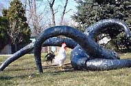

|
Patriciu (Patrick)
Mateescu
Romanian-American ceramist
Patrick
Mateescu is a Romanian-born American ceramist. He received
an MFA from the Academy of Fine Arts in Bucharest, Romania and settled
in the USA in 1979. Since 1998 Mateescu has distanced himself from
decorative aspects in his previous work, such as color and symmetry,
in favor of dramatic expression in his current abstract sculptures.
His work ranges from from small to large scale cast porcelain pieces
to figurative stoneware monuments, including his
Hai Ku sculpture (pictured below), Clouds
(pictured below), Cocoons,
Heavenly Hands, Gargoyles
and many more.

Mateescu has won several prizes
and awards, including a Gold Medal at the International
Ceramic Exhibition, Prague, Czechoslovakia in 1962, a Gold Medal
at 'Form und Qualität', Munich, Germany in 1966, a Gold Medal
at the 36th International Ceramic Show, Faenza, Italy, in 1978 and
the New Jersey State Council on the Arts Fellowship in 1999.
More Artists of the Week
More Articles
|
{kind=link}
{kind=link}
{kind=link}
{kind=link}
{kind=link}
{kind=link}